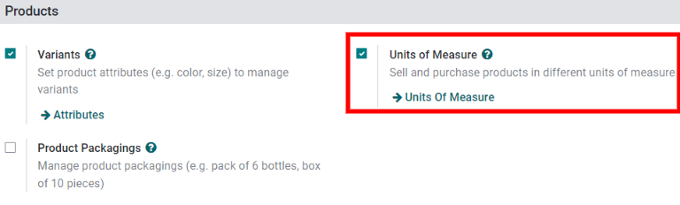

Unidades de medida¶
En algunos casos es necesario gestionar productos en distintas unidades de medida. Por ejemplo, si una empresa compra productos de un país que utiliza el sistema métrico y los vende en un país que utiliza el sistema imperial, entonces deberá convertir las unidades.
Otro caso donde sería útil realizar una conversión de unidades es cuando un negocio le compra un paquete con varios productos iguales a un proveedor y luego los vende de forma unitaria.
Es posible configurar Odoo para que el mismo producto use diferentes unidades de medida (UdM).
Configuración¶
Para usar distintas unidades de medida en Odoo primero vaya a la . En la sección Productos habilite los ajustes relacionados a la función Unidades de medida y luego haga clic en Guardar.
Categorías de unidades de medida¶
Después de habilitar el ajuste de unidades de medida podrá visualizar las categorías predeterminadas en . La categoría es importante para realizar la conversión de unidades, ya que Odoo solo puede convertir la unidad de un producto a otra si ambas pertenecen a la misma categoría.

Cada unidad de medida tiene una unidad de referencia. Dicha unidad de referencia se resalta con el color azul en la columna Udm de la página de categorías de unidades de medida. Odoo utiliza la unidad de referencia como base para las nuevas unidades.
Para crear una nueva unidad, primero seleccione la categoría correcta desde la página Categorías de las unidades de medida. Por ejemplo, haga clic en la línea de la categoría Unidad para vender un producto en una caja de seis unidades y después, en la página de la categoría que aparece, haga clic en Agregar una línea en la pestaña Unidades de medida. En el campo Unidad de medida, proporcione un nombre para la nueva unidad, como Caja de 6 y en el campo Tipo seleccione el tamaño de referencia apropiado, por ejemplo Más grande que la unidad de medida de referencia.
Ingrese una categoría de UNSPSC en caso de que sea necesario. Es un código gestionado por GS1 reconocido de forma mundial y debe comprarlo para poder utilizarlo.
En el campo Proporción ingrese cuántas unidades individuales hay en la nueva unidad de medida, por ejemplo 6.00000 al usar el ejemplo del Paquete de 6 (ya que una caja de seis es seis veces más grande que la unidad de referencia, 1.00000).

Especificar las unidades de medida de un producto¶
Para establecer las unidades de medida de un producto vaya a la y seleccione un producto para abrir su página de formulario.
En la pestaña Información general edite el campo Unidad de medida para especificar la correspondiente a la de venta del producto. Esa unidad también se utilizará para llevar seguimiento del inventario y los traslados internos del producto.
Edite el campo UdM de compra para especificar la unidad de medida que se utiliza para comprar el producto.
Conversión de unidades¶
Odoo convierte las unidades de medida en automático cuando los productos tienen distintas UdM y UdM de compra.
Algunos de los casos en donde esto ocurre son los siguientes:
Órdenes de proveedor: la unidad de medida de compra en las órdenes de compra se convierte en la unidad de medida en los documentos internos del almacén.
Reabastecimiento automáticco: genera órdenes de compra cuando los niveles de existencias de un producto (de las que se llevan seguimiento en UdM) bajan por debajo de cierto nivel. Las órdenes de compra se crean con la UdM de compra.
Venta de productos: la cantidad se convierte a la unidad de medida preferida del almacén en la orden de entrega al utilizar una unidad distinta en la orden de venta.
Comprar productos en la unidad de medida de compra¶
Odoo utiliza de forma automática la unidad de medida de compra que se especificó en el producto al crear una nueva solicitud de cotización en la aplicación Compra. Edite de forma manual el valor de la UdM en la solicitud de cotización si es necesario.
Luego de confirmar la solicitud de cotización se convertirá en una orden de compra. Haga clic en el botón inteligente Recibo ubicado en la parte superior de esa orden.
De forma automática, Odoo convierte la unidad de medida de compra en la unidad de medida de ventas o inventario del producto, así que la columna Demanda del recibo de entrega mostrará la cantidad convertida.
Example
Si la UdM de compra del producto es Caja de 6 y su unidad de medida de venta e inventario es Unidades, entonces la orden de compra mostrará la cantidad en cajas de seis y en el recibo de entrega (y otros documentos del almacén) aparecerá en unidades.
Se crea una orden de tres con la «Unidad de medida» de compra: Caja de 6.¶
Luego de recibir el producto en el almacén, las cantidades registradas se encuentran en la «Unidad de medida» interna: Unidades.¶
Reabastecimiento¶
También es posible generar una solicitud de cotización de un producto desde su formulario con el botón Reabastecer.
Aparecerá un cuadro con el asistente de reabastecimiento después de hacer clic en Reabastecer. En caso de que sea necesario, es posible editar de forma manual la unidad de medida de compra en el campo Cantidad. Después, haga clic en Confirmar para crear la solicitud de cotización.
Importante
Una orden de compra se puede generar de forma automática solo si hay al menos un proveedor establecido en la pestaña Compra del formulario del producto.

Para ir a la orden de compra creada haga clic en el botón inteligente Pronosticado del formulario del producto. Diríjase a la sección Inventario pronosticado y en la línea Solicitudes de cotización haga clic en el número de referencia de la solicitud de cotización para abrir el borrador correspondiente. Es posible editar la unidad de medida de compra desde la orden de compra.
Vender en una UdM diferente¶
Odoo utiliza de forma automática la unidad de medida especificada en el producto para crear nuevas cotizaciones en la aplicación Ventas. En caso de que sea necesario, puede editar la UdM en la cotización de forma manual.
Después de enviar la cotización al cliente y confirmarla para convertirla en una orden de compra, haga clic en el botón inteligente Entrega ubicado en la parte superior de la orden de venta. Odoo convierte la unidad de medida en la unidad de medida de inventario del producto de forma automática. De esta forma, en la columna demanda de la entrega aparecerá la cantidad convertida.
Por ejemplo, si la UdM del producto en la orden de venta se cambió a Caja de 6, pero su unidad de medida de inventario es Unidades, entonces la orden de venta muestra la cantidad en cajas de seis y la entrega la mostrará en unidades.